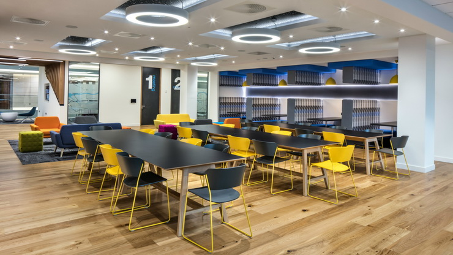

Unilever is a British-Dutch FMCG company, It is famous company mainly deals in food, beverages, cleaning agents and personal care products. Unilever headquartered is in London, England. Unilever is one of the oldest and its products are available in around 190 countries.
In its UK offices, Unilever has around 1500 employees which are spread across 12 floors. They have 2 canteens to cater to these 1500 employees. Each canteen can seat around 150 employees at a time As a business analyst i was task to implent a website that employee can order online without delay at the canteen. This analysis was perfomed using Microsoft Office Suites,Goggle Suites,Draw.io,Jira Board,Raci Matrix and Collaborating Tools
.


This innovative vehicle, built for thrill-seekers and adventurers alike, offers a remarkable riding experience by fusing unmatched performance with stylish design.
The Gear Up Bike gives you the freedom to explore new areas, whether you're riding through urban areas or across difficult terrain. With the Gear Up Bike, get ready to enhance your ride and stoke your spirit of adventure, As project management i was task to Streamline the bike purchase process to reduce customer wait times and improve efficiency.This analysis was performed using mircsoft office suit, project management tools.

Is a well-established e-commerce retailer, is looking to gain deeper insights into customer behaviour to improve their online shopping experience and boost sales. we observed that their e-commerce platform is not achieving the desired level of success, given the substantial investment made in its development. This analysis was performed using microsoft execl

British Airways, one of the world's leading airlines, has been synonymous with
excellence and reliability for decades. The airline wants to understand what factors are most important
to customers and how it can improve its services in these areas, this analysis was peformed using POWER BI.

Welcome to the cutting-edge S A Car Factory, where innovation meets precision engineering to craft the vehicles of tomorrow. Nestled within our state-of-the-art facility, we blend decades of automotive expertise with advanced technology to redefine the driving experience.As a project cordinator i was task with data set to find out how well the produce product is selling. this analysis is performed using MYSQL

Tech Haven is a small electronics company thrive in the rapidly
changing market. we are tasked to Create a new database for “Tech Haven”
. Create tables for each dataset (sales, customer & product) to identify
key areas the business can improve and after analyzing the company must adapt to
shifting consumer preferences, embrace e-
commerce, and focus on sustainability. This analysis was performed using MYSQL

Sunshine Resort is a luxurious beachfront hotel
management company that caters to leisure and business
travelers alike. As part of its commitment to exceptional
customer service and continuous improvement, the hotel
management team wants to gain deeper insights into their
reservation data.